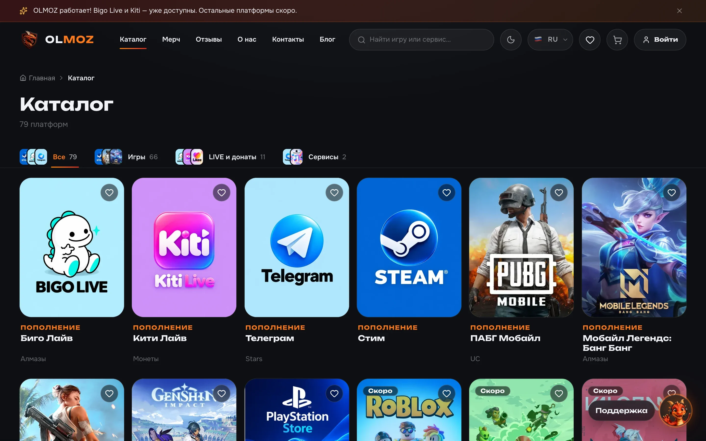

Страница одного сервиса стала каталогом, а движок оплаты заказчика остался прежним.
- Мешало
- Сначала планировалось не больше 20 сервисов, по странице на каждый. Потом заказчик сказал, что платформа вырастет до 600 сервисов. Платежи, проверка ID и история заказов при этом уже работали на его движке.
- Решил
- Т-Банк, крипту, проверку игрового ID, ценовые уровни и историю заказов я оставил у заказчика. Поменял витрину и добавил сверху каталог, корзину, отзывы и блог. Разработчик заказчика подключает настоящие данные, не переделывая экраны.
